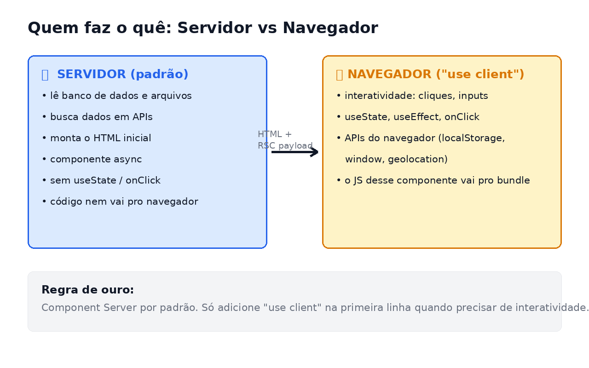

Server vs Client Components
Até agora as páginas da Ana eram simples demais para notar, mas chegou o momento da regra mais importante do App Router: todo componente é um Server Component por padrão — e só vira Client Component se você colocar a diretiva "use client" na primeira linha do arquivo. Nesta página você vai entender quando usar cada um.
- A regra de ouro: Server por padrão;
"use client"na 1ª linha para Client - O que o Server Component pode fazer: async, ler banco/arquivos, buscar dados, não manda JS pro navegador
- O que o Client Component pode fazer: useState, useEffect, onClick, APIs do navegador
- Como eles conversam: Server renderiza Client passando props serializáveis
- Erros reais: evento em Server Component, "use client" fora da 1ª linha, hydration mismatch
A ideia: a cozinha (servidor) vs a mesa do cliente (navegador)
Imagine um restaurante. A cozinha (o servidor) tem acesso a tudo: o estoque, o freezer, as receitas, o caixa. Ela prepara o prato e manda pronto para a mesa. O cliente nunca entra na cozinha — ele não precisa saber de onde veio a comida. Um Server Component é a cozinha: ele pode ser async, ler o banco de dados, ler arquivos do disco, chamar APIs privadas com chave secreta — e depois manda para o navegador só o resultado em HTML. O código dele nunca vai para o navegador, então a chave secreta fica segura e o bundle fica leve.
Já a mesa do cliente (o navegador) é onde a interação acontece: o cliente prova, pede mais, enche o copo — ele reage na hora. Um Client Component é isso: pode usar useState (memória que muda), useEffect (efeitos depois que a página carregou), onClick nos botões e APIs do navegador como localStorage e window. É o único tipo que aceita eventos e hooks de estado.
A ponte entre os dois é simples: um Server Component pode renderizar um Client Component e passar props serializáveis (texto, número, objeto, array — qualquer coisa que dê para transformar em JSON). O que não pode passar é função (um onClick pronto, por exemplo) — porque o código da função não pode ir para o navegador. A regra prática da Ana: use Server Component sempre que der; só adicione "use client" quando precisar de interatividade ou de APIs do navegador. Quanto menos Client Components, mais leve o site.

Server Component (padrão) — busca dados direto
// Sem "use client": é Server Component. Pode ser async e buscar dados!
export default async function Home() {
const res = await fetch("https://api.exemplo.com/posts");
const posts = await res.json();
return (
<main>
<h1>Posts</h1>
<ul>
{posts.map((p) => <li key={p.id}>{p.titulo}</li>)}
</ul>
</main>
);
}
Client Component — interatividade
"use client"; // ← OBRIGATÓRIO na primeira linha do arquivo
import { useState } from "react";
export default function Contador() {
const [contagem, setContagem] = useState(0);
return (
<button onClick={() => setContagem(contagem + 1)}>
Cliques: {contagem}
</button>
);
}
E o Server Component usa o Client Component normalmente, passando props serializáveis:
import Contador from "./Contador";
export default function Home() {
return (
<main>
<h1>Minha página</h1>
<Contador /> {/* o Next manda o HTML do contador + o JS só dele */}
</main>
);
}
| Server Component (padrão) | Client Component ("use client") | |
|---|---|---|
| Onde roda | Só no servidor | Servidor (HTML) + navegador (JS interativo) |
| Pode ser async / buscar dados | ✅ sim | ❌ não |
| Hooks useState/useEffect | ❌ não | ✅ sim |
| Eventos onClick etc. | ❌ não | ✅ sim |
| APIs do navegador (window, localStorage) | ❌ não | ✅ sim |
| Chaves secretas / banco de dados | ✅ seguro | ❌ vaza pro navegador |
| Tamanho do JS enviado | zero | aumenta o bundle |
Quando dá errado
Error: Event handlers cannot be passed to Client Component props.
<button onClick={...}> ...
Dica do guia: se o componente usa onClick/useState, coloque a diretiva
"use client" como a PRIMEIRA linha do arquivo (antes de qualquer import).
Error: "use client" must be at the top of the file, before any imports.
Dica do guia: a diretiva precisa ser literalmente a 1ª linha:
"use client";
import { useState } from "react"; ← só depois
Warning: Text content did not match. Server: "8:03" Client: "8:04" Error: Hydration failed because the server rendered HTML didn't match the client. Dica do guia: no Server Component, a renderização acontece num horário e no navegador seria outro. Para valores que mudam, mova para um Client Component ou use useEffect (que só roda no navegador).
Exercícios
1. Por padrão, todo componente do App Router é:
2. O que a diretiva "use client" faz?
3. Qual desses o Server Component PODE fazer?
Exercício 1
Escreva a diretiva exata (com aspas) que deve ser a primeira linha de um arquivo para torná-lo Client Component: